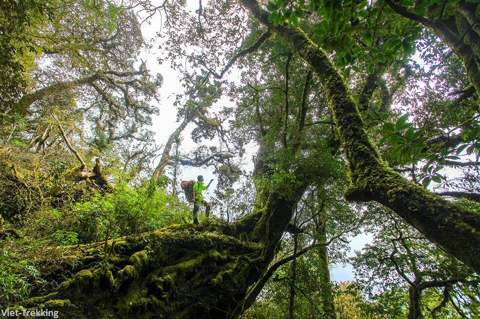

An toàn
An toàn là tiêu chuẩn đầu tiên trong mọi lịch trình. Chúng tôi chuẩn bị thông tin cung đường, nhân sự hỗ trợ và phương án vận hành để khách hàng yên tâm trước khi xuất phát.

Chúng tôi tạo nên những hành trình trekking an toàn, rõ ràng và đủ sâu để mỗi người thật sự kết nối với núi rừng Việt Nam.
Hidden Path được xây dựng từ tình yêu với những cung đường núi phía Bắc và mong muốn đưa trải nghiệm trekking đến gần hơn với những người yêu thiên nhiên. Mỗi tour không chỉ là một lịch trình di chuyển, mà là một hành trình được chuẩn bị cẩn trọng từ thông tin, hậu cần, an toàn đến cảm xúc của người tham gia.
Chúng tôi tập trung vào nhóm khách vừa đủ, lịch trình minh bạch và đội ngũ đồng hành am hiểu địa hình. Hidden Path tin rằng một chuyến đi tốt cần giúp khách hàng biết mình sẽ đi đâu, chuẩn bị gì, gặp thử thách nào và được hỗ trợ ra sao trong suốt hành trình.
Từ Fansipan, Khang Su Văn, Ky Quan San đến những cung đường còn nguyên nét hoang sơ, Hidden Path luôn hướng tới cách làm du lịch có trách nhiệm: tôn trọng thiên nhiên, tôn trọng cộng đồng địa phương và đặt yếu tố an toàn lên trước mọi quyết định.
An toàn là tiêu chuẩn đầu tiên trong mọi lịch trình. Chúng tôi chuẩn bị thông tin cung đường, nhân sự hỗ trợ và phương án vận hành để khách hàng yên tâm trước khi xuất phát.
Hidden Path đồng hành từ khâu tư vấn, chuẩn bị đồ dùng, xác nhận lịch trình đến khi kết thúc tour. Mỗi câu hỏi của khách hàng đều là một phần quan trọng của chuyến đi.
Chúng tôi không chạy theo những chuyến đi hào nhoáng. Giá trị của Hidden Path nằm ở cảnh quan thật, thử thách thật và cảm giác chinh phục thật trên từng cung núi.
Sứ mệnh của Hidden Path là giúp nhiều người khám phá núi rừng Việt Nam theo cách an toàn, văn minh và có trách nhiệm. Chúng tôi muốn mỗi hành trình không chỉ dừng lại ở việc chạm tới một đỉnh núi, mà còn giúp người đi hiểu hơn về thiên nhiên, văn hóa bản địa và chính giới hạn của bản thân.
Hidden Path hướng tới việc xây dựng một cộng đồng trekking có chuẩn bị, biết tôn trọng môi trường và biết trân trọng công sức của những người địa phương cùng tham gia tạo nên hành trình.
Thông tin tour, độ khó, thời lượng, chi phí và những điều cần chuẩn bị được trình bày rõ ràng trước khi khách hàng đăng ký.
Đội ngũ Hidden Path tư vấn hành trang, thể lực, lịch khởi hành và các lưu ý quan trọng để khách hàng chủ động chuẩn bị.
Hướng dẫn viên và porter địa phương phối hợp để hỗ trợ đoàn, theo sát nhịp di chuyển và xử lý tình huống phát sinh.
Mỗi chuyến đi được tổ chức với tinh thần hạn chế rác thải, giữ gìn cảnh quan và không gây ảnh hưởng xấu tới cộng đồng bản địa.